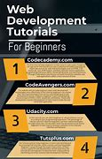

Card 1: Resources and Tutorials
Here are some useful resources for learning web development:
Card 2: My Web Development Journey
Web development has been an exciting journey for me. Here are some things I've learned:
- HTML5 is the backbone of every webpage.
- CSS3 makes a website visually appealing and responsive.
- JavaScript enables interactivity and functionality on the webpage.